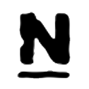

This table listed some characters of languages and Nagios
| Language | Characteristic | |
|---|---|---|
| Bash | Author: Brian Fox | Written in C |
| Perl | Interpreted language, created by Larry Wall | |
| Python | Interpreted language, author: Guido Van Rossum | |
| Nagios | ||
|---|---|---|
|
It is a free and open source computer-software application that
monitors systems, networks and infrastructure. Nagios offers
monitoring and alerting services for servers, switches, applications
and services. It alerts users when things go wrong and alerts them a
second time when the problem has been resolved.
Nagios was originally designed to run under Linux, but it also runs well on other Unix variants. It is free software licensed under the terms of the GNU General Public License version 2 as published by the Free Software Foundation. Nagios is written in C language. |
 |
Currently it provides:
|